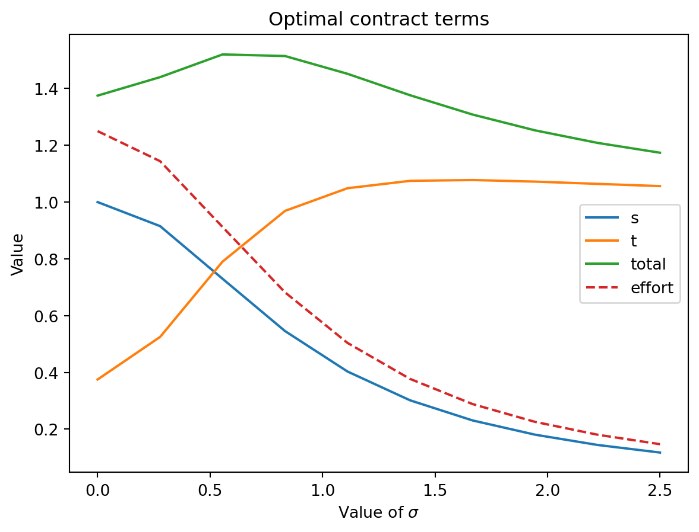
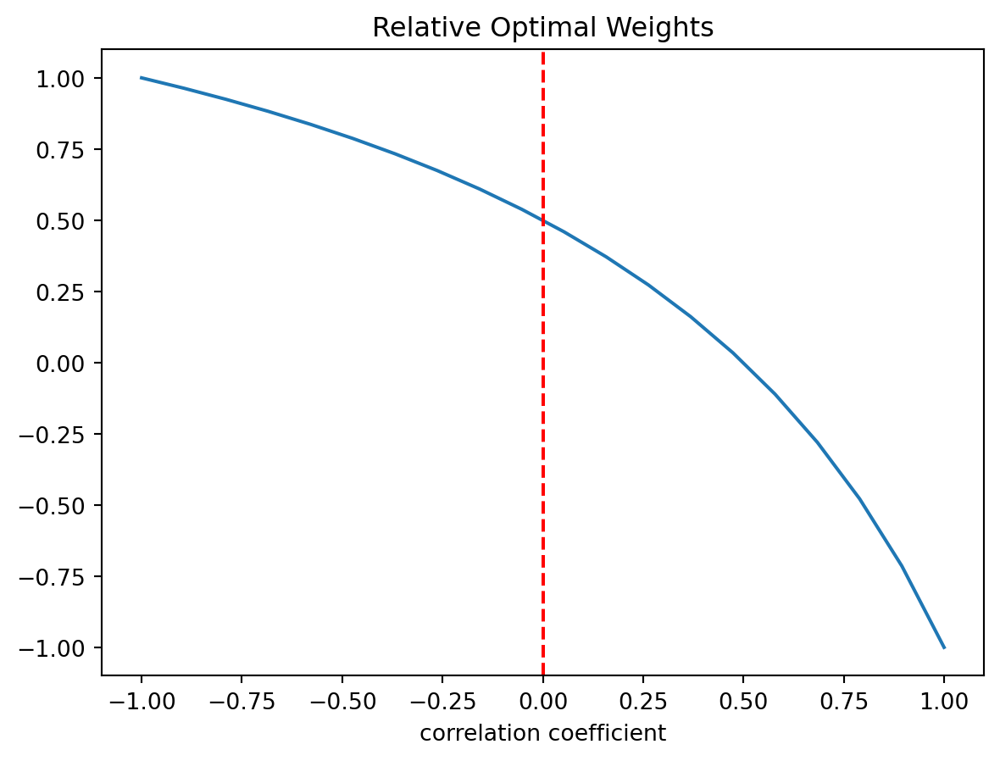

Moral hazard arises when the value of a transaction for one party can be influenced by actions or decisions taken by the other party. Two additional conditions are required for the problem of moral hazard to occur:
Hidden action: This action is not directly observable or perfectly inferable by the party whose results are affected.
Risk aversion: At least one of the parties must be risk-averse.
The essence of the moral hazard problem lies in the conflict between two fundamental objectives:
Provision of adequate incentives.
Efficient risk distribution.
There is a substitution effect: the extent to which one party is shielded from risk influences their incentives to take actions that are efficient for the other party.
The challenge is to design an compensation scheme or incentive mechanism that minimizes the conflict between the two objectives. The optimal solution depends on the characteristics of the parties involved, such as their risk aversion, the observability of their actions, and the nature of the relationship between them.
A Very Simple Example
Let’s assume that a company (principal) hires a manager (agent) responsible for running the business. The company’s outcomes depend on both random factors and the manager’s effort. For now, let’s assume the effort can be either high (A) or low (B), and the company’s outcomes can either be success (E) or failure (F). The company’s profit in the success scenario is $360, and in the failure scenario, it is $200. The probability of success is 75% with high effort and 25% with low effort.
Therefore, the expected profit of the principal when effort is high is: 360 \times 0.75 + 200 \times 0.25 = 320. In contrast, when the effort is low the expected profit is: 360 \times 0.25 + 200 \times 0.75 = 240.
This can be summarized in the following table:
High Effort (A)
Low Effort (B)
Success (S)
75%
25%
Failure (F)
25%
75%
Expected Profit
$320
$240
We assume that the principal seeks to maximize the expected value of their net profits (expected value minus the payment to the agent). For now, let’s consider the principal to be risk-neutral.
The agent (manager) aims to maximize an expected utility function of the form:
U = U(w) - v(e)
Where U(w) is the utility of the payment received (remuneration), and v(e) is the cost of effort e.
We can distinguish four possible cases:
Observable effort, risk-neutral agent
Non-observable effort, risk-neutral agent
Observable effort, risk-averse agent
Non-observable effort, risk-averse agent
Observable Effort, Risk-Neutral Agent
Let’s assume an agent with a utility function U = w - v(e), and a reservation utility of \underline{U} = 81. The costs of effort are v(B) = 0 and v(A) = 63. (The numbers are arbitrary and chosen to facilitate later comparisons).
If the principal settles for low effort, they offer the agent a salary equal to the reservation utility w = 81. The expected profit for the principal is 240, and the net benefit is 240 - 81 = 159.
If the principal wants to ensure high effort, the agent’s remuneration must cover the disutility of effort, i.e., w = 81 + 63 = 144. The net profit for the principal in this case is 320 - 144 = 176.
Thus, for the principal, the best alternative is to offer a fixed payment of 144 and obtain an expected profit of 176.
Non-Observable Effort, Risk-Neutral Agent
Now, consider the case where the effort (A or B) is non-observable and the agent continue being risk-neutral. In this case, the conflict between incentives and risk distribution is easily resolved. The most effective way to provide incentives is to make the agent bear all the consequences of their decisions.
The contract cannot depend on effort because effort is neither observable nor verifiable. However, results such as profits are observable. Therefore, the principal can exploit the correlation between effort and profits to incentivize the agent. The principal will pay X in case of success ($E$), and Y in case of failure (F). This introduces uncertainty for the agent.
The principal can induce high effort by offering the agent a contract characterized by a compensation conditional on the outcome: W_E and W_F, with the following requirements:
Individual Rationality: The utility for the agent must be greater than their reservation utility.
Incentive Compatibility: The utility of exerting high effort must be greater than the utility of low effort, i.e.,E[U(A)] > E[U(B)].
As it is inefficient for the principal to pay more than needed to influence effort, the previous system of inequations are solved at the equality conditions. The optimal contract in this case involves:
W_E = 184, \quad W_F = 24.
Observable Effort, Risk-Averse Agent
Qhat happens when we have a risk-averse agent? For example, assume the utility function U = W^{1/2} - v(e), where v(A) = 3 and v(B) = 0, and the reservation utility is \underline{U} = 9.
To induce low effort, it is sufficient to offer a fixed salary that yields a utility level equal to or greater than the reservation utility (W=\underline{U}^2=81). The principal’s expected net profit is 240 - 81 = 159, the same as in the scenario with a risk-neutral agent.
To induce high effort, the agent needs to be compensated for the additional disutility of the high effort. As effort can be observed, this can be achieved with a fixed salary of 144=(\underline{U}+3)^2, conditioned on high effort . Thus, the expected net profit for the principal is 320 - 144 = 176, higher than the profit for low effort (though it may not always be optimal to pay for high effort).
In this case, the agent’s risk aversion does not pose a problem since there is no uncertainty involved. The agent’s action and payment are not contingent on the state of nature.1
Non-Observable Effort and Risk-Averse Agent
The lack of observability of effort forces to create the compensation contract contingent on outcomes (which are correlated with effort) or abandoning variable compensation altogether. In this scenario we can see the main conflict in moral hazard problems:
Efficient Risk Distribution: the risk-neutral party (the principal) should bear all the risk, while the risk-averse party (the agent) remains on the certainty line.
Incentive Problem: For proper incentives, the agent must perceive differences in remuneration based on their effort level.
The challenge is to find the optimal balance between incentive provision and risk distribution. In the case of a risk-neutral agent, this was not a significant issue, as simply transferring residual control to the agent solved the problem. However, in this case, any variable compensation scheme must compensate the risk-averse agent for the risk they bear.
For comparison, let’s keep the utility function and parameters from the previous section. If the principal desires low effort, a fixed salary of 81 is sufficient. However, to incentive high effort, the contract with w = 144 will no longer suffice because effort is not observable, and uniform wages provide an incentive to cheat by exerting low effort.
The contract that induces high effort must meet both the individual rationality and incentive compatibility constraints, expressed as:
The second constraint can be written as 0.5[U(W_E) - U(W_F)] \geq 3. This captures the difference in utilities associated with the remuneration in each state, ensuring that high effort is chosen over low effort. The solution for this system of equation is W_E = 182.25 and W_F = 56.25. The expected cost of the contract that incentives high effor for the principal is 0.75 \times 182.25 + 0.25 \times 56.25 = 159.75, leaving them with an expected net benefit of 320 - 159.75 = 169.25.
It is important to note that inducing high effort now has a higher cost for the principal compared to the observable effort case. The cost has increased from 144 to 159.75. The additional 6.75 is the cost of non-observability, which economically corresponds to compensating the agent for the risk assumed.
General Model of Moral Hazard
This section borrows from Lambert (2001) Chapter 2 and Bolton and Dewatripont (2005) Chapter 4. Here we develop more general version of the moral hazard problem. We start by stating the more general framework, and then applying for specific functional forms for the level of effort and performance outcome.
Moral hazard problems can be modeled as sequential games where, in the first stage, the principal offers a contract, and in the second stage, the agent must accept or reject it and then choose their level of effort. Thus, it is a problem that can be solved using backward induction.
In the final stage of the game, the agent chooses a level of effort considering the n potential performance outcomes.
e \in \max \sum_{i=1}^n p_i(e)U(w(x_i)) - v(e)
This condition corresponds to the incentive compatibility constraint. In the immediately preceding stage, the agent decides whether to participate in the contract:
In the first stage of the problem, the principal designs the contract , anticipating the agent’s behavior. Formally, the contract proposed by the principal is the solution to:
e \in \max \sum_{i=1}^n p_i(e)U(w(x_i)) - v(e)
\tag{1}
First-Order Simplification
The constraint in Equation 1 is not very tractable, and theorist have develop conditions where it can be replaced by the agent’s first-order condition on effort. If we assume that the agent’s optimal effort is in the interior of the effort set, then the agent first-order condition is
\sum_{i=1}^n p_i'(e)U(w(x_i)) - v'(e)=0
The issue with this method is that the first-order condition is necessary but not sufficient. Effort is present in both the disutility function v(e) and the probability distribution of results, implying that the expected utility function is not necessarily concave. Therefore, the first-order approach may yield more solutions than the original problem, potentially leading to suboptimal outcomes for the principal. We must impose restrictions on the conditional distribution of outcomes given effort to ensure that the second-order condition holds.
Solving optimal contract
The Lagrangian for the principal’s problem using the first-condition approach is:
So, \mu=0 reduces the optimal contract to the first-best solution. Holmström (1979) shows that as long as the principal aims to influence more effort than the lowest possible, then \mu>0. In those cases, the optimal risk sharing depends on the sign and magnitude of \frac{p_i'(e)}{p_i(e)}. An statistical interpretation of this ratio is that the principal use the outcome x to infer the parameter e, that is, the effort level taken (Milgrom 1981). In other words, the principal rewards the outcomes that are more likely to happen with higher level of efforts (p_i'(e)>0).
Equation 2 indicates that the optimal contract shape depends on the functional form for the principal’s and agent’s utility functions as well as for outcome distribution function. Depending on these settings, the optimal contract can be linear, convex, or concave in x. A sufficient condition for the contract to be monotonically increasing in the outcome is that \frac{p_i'(e)}{p_i(e)}is increasing in the outcome (called monotone likelihood ratio condition, MLRC ), which is a stronger condition the the mean of the outcome distribution to increase with the outcome. This condition is meet by many common probability functions.
Linearity in the Outcome
Even if the likelihood ratio is monotonic and linear in the outcome, this would not imply that the optimal compensation is also linear in the outcome. As Equation 2 shows, the shape of the contract also depends on the preference functions of the agent and the principal.
For example, assuming the the principal is risk neutral and the agent’s has an hyperbolic absolute risk aversion (HARA) utility function, then the optimal compensation is a concave function of the outcome, as shown in Equation 3.
Thus, the optimal contract is linear in the outcome if \gamma=1 (e.g., logarithmic utility function), and concave (convex) if \gamma>1 (\gamma<1).
Limited Liability
In many instances, the optimal compensation needs to be bounded below given limited liability or wealth constraints of the agent. The problem is that Equation 2 implies penalization to the agent for bad outcomes. Therefore, the optimal compensation is often nondifferentiable and has a piecewise linear form. See Mirrlees (1974).
Accounting Performance Measures
Now let’s add an additional performance measure to the model to check in which conditions they reduced the welfare loss relative to the first-best solution. This will be the case if they increase the agent’s incentive to exert effort or improve the risk-sharing between the principal and the agent. Be y the performance measure. In this case, Equation 2 becomes
Thus, the optimal contract depends on the performance metric if \frac{p_i'(x,y;e)}{p_i(x,y;e)} also depends on y. However, if x is a sufficient statistic for x and y with respect to e, then the optimal contract is independent of y. This is called Holmstrom’s informativeness condition (Holmström 1979).
Sufficient Statistic
If x=e+a_1 and y=x+a_2, where a_1 and a_2 are independent random variables, then x is a sufficient statistic for x and y with respect to e. In other words, y does not add any information about e that is not already contained in x.
Accounting systems aggregate performance measures. The demand for aggregation of performance measures arises because reporting all the basic transactions and other nonfinancial information is costly and unrealistic. Accountants aggregate linearly these measures assigning equal weights to each them. For example, total cost is the sum of each cost item, net benefits is revenues minus expenses. Furthermore, in practice, performance evaluation and compensation usually rely on those accounting aggregated metrics. To what extent contract theory support the linear aggregation of performance with equal weights? Banker and Datar (1989) provide theoretical support for the linear aggregation but also highlight that the equal weights assumption is rarely optimal. The components of the performance measure should be weighted according to agent’s capacity to influence them and their noisiness. Thus, only in cases where the signal-to-noise ratio is the same for all components, the equal weights assumption might be optimal. To see this, let’s continue with the same example but now assume that the principal is risk neutral and that x and y are both performance metrics. The optimal contract is given by Equation 4 and yields
w^*(x,y)= W \left[ \lambda + \mu \frac{p_i'(x,y;e)}{p_i(x,y;e)} \right]
where W is the inverse of the agent’s marginal utility function. Let’s define the aggregate performance measure as \pi(x,y)=\lambda + \mu \frac{p_i'(x,y;e)}{p_i(x,y;e)}. For many probability distributions, such as those in the exponential family, the likelihood ratio is linear in x and y, thus the optimal contract supports linear aggregation. In terms of the optimal weights, Banker and Datar (1989) shows that for the exponential family of distribution, when both metrics are independently distributed given the agent’s effort, then the optimal weights are proportional to (1) the sensitivity of the metric to the effort, and (2) to the inverse of the variance of the performance metrics. If we denote the weights as \beta_x and \beta_y, then the optimal weights are given by
The relevance of variables not controlled by the agent
If the principal or other agent invest in technology or capital such as the agent’s effort is more productive or the performance metric is more sensitive to its effort, then it is optimal to introduce those variables into the contract even though are not controlled by the agent. In this case, the optimal contract adjusts the compensation to subtract the principal’s investment effect on the mean outcome or adjusts the weights of the performance metrics to reflect their new informativeness.
How the optimal contract should weights performance metrics that are correlated? In that case, Equation 5 is rewritten as
so, even if the agent does not control y (e.g., \frac{\partial E(y;e)}{\partial e}=0) then both metrics should be included in the contract with weights that reflect the correlation between them.
Thus, if the metrics are positively correlated, then their weights have opposite signs. The interpretation is that the positive correlation is driven by an exogenous common factor, and by adjusting y with a negative weight some of the noise driven by the common factor in x is removed.
Linear-exponential-normal (LEN) models
Now we develop another widely used model considering linear contracts, normally distributed performance and exponential utility for the agent. The performance outcome is assumed to be equal to effort (in monetary terms) plus noise: x=e+\epsilon, with \epsilon\sim N(0,\sigma^{2}). We keep considering the principal to be risk neutral while the agent’s utility function is CARA represented by a negative exponential utility function u(w,e)=-e^{-\eta\left[w-\psi(e)\right]}, with \psi(e)=\frac{1}{2}ce^{2}. Therefore, the principal only cares about the expected cost of motivating the agent to accept the contract and exert effort and not about risk sharing.
In these models, the contract follows a linear form such as w=t+sx where t is a fix component and s is the performance-related component.
obtaining a^*=\frac{s}{c}. So for any given performance incentive s, the principal knows the effort choice of the agent. Introducing this condition into the principal problem reduces the optimization variables (now only the contract terms) and the number of restrictions. By solving the principal model, we obtain the optimal contract:
so the variable compensation is high when the cost of effort c is low, the degree of risk aversion \eta is low, and randomness of the output \sigma is low.
Code
import matplotlib.pyplot as pltimport numpy as npc=0.8# cost of efforteta=1.5# risk aversionw=1# reservation utility# Plot s,t,and total, for different values of sigma sigma = np.linspace(0,2,10)s =1/(1+c*eta*sigma**2)t = w - (1-c*eta*sigma**2)/(2*c*(1+c*eta*sigma**2)**2) total = t + s effort = s/c plt.plot(sigma, s, label='s')plt.plot(sigma, t, label='t')plt.plot(sigma, total, label='total')plt.plot(sigma, effort, label='effort', linestyle='dashed')plt.legend()# render sigma symbol in the x labelplt.xlabel('Value of $\sigma$')plt.ylabel('Value')plt.title('Optimal contract terms')plt.show()

Code
# plot the utility of the agent and principal for different values of sigmau_agent =-np.exp(-eta*(t+s*effort-0.5*c*effort**2-s**2*eta*sigma**2/2)) u_principal = effort-t-s*effortplt.plot(sigma, u_agent, label='Agent')plt.plot(sigma, u_principal, label='Principal')plt.legend()plt.xlabel('Value of $\sigma$')plt.ylabel('Utility')plt.title('Agent and Principal utility')plt.show()
Accounting Perfomance Measures
Let’s again assume again that x and y are both accounting signals, such as x=e+\epsilon_x and y=2e+\epsilon_y, where \epsilon_x and \epsilon_y are joinly normally distributed with zero means. Then, the joint distribution function f(x,y;e) is a bivariate normal distribution with
Mean vector:
\mu_{x,y} = \left(\begin{array}{c} e \\ 2e \end{array}\right)
where \sigma_x^2 is the variance of \epsilon_x, \sigma_y^2 is the variance of \epsilon_y, and \rho is the correlation coefficient between \epsilon_x and \epsilon_y. The Equation 6 becomes
Let’s see the comparative statics of the optimal weights for different values of \rho and \sigma_y. First, let’s assume that both signals have the same noise, \sigma_x=\sigma_y=2.5.
Code
# plot the beta_x/beta_y for different values of rho rho = np.linspace(-1,1,20)sigma_y =2.5sigma_x =2.5# subplot for rhobeta_rho = (1-2*(rho*sigma_x*sigma_y)/(sigma_y)**2)/(sigma_x**2)*(sigma_y**2)/(2-(rho*sigma_x*sigma_y)/(sigma_x)**2)plt.plot(rho, beta_rho)plt.xlabel('correlation coefficient')# add vertical line in x=0plt.axvline(x=0, color='r', linestyle='--')## add subtitleplt.title('Relative Optimal Weights')plt.show()

so, if \rho=0, the optimal contract weight for x is half of the weight for y, as this second signal is more sensitive to effort and has the same noise. If \rho=-1, then both both signal have full positive weight in the contract. If \rho=1, then the signals are substracted from each other in the contract to remove the common noise.
Now, let’s see the comparative statics for different values of \sigma_y, considering \rho=0 and \sigma_x=2.5.
Code
# plot the beta_x/beta_y for different values of sigma_yrho=0sigma_y = np.linspace(0.1,5,10)sigma_x =2.5# plot for sigma_ybeta_sigma_y = (1-2*(rho*sigma_x*sigma_y)/(sigma_y)**2)/(sigma_x**2)*(sigma_y**2)/(2-(rho*sigma_x*sigma_y)/(sigma_x)**2)plt.axvline(x=2.5, color='r', linestyle='--')plt.plot(sigma_y, beta_sigma_y)plt.xlabel('Value of $\sigma_y$')plt.title('Relative Optimal Weights')plt.show()
Here the red line the same situation than in the previous plot, meaning that when both signals have the same noise, the optimal weight for x is half of the weight for $y. If \sigma_y gets closer to zero, then the weight for x decreases as y gets better signal-to-noise ratio.
This section borrows from Lambert (2001) Chapter 3 and Bolton and Dewatripont (2005) Chapter 6.
Disclosure of Private information
This section borrows from Lambert (2001) Chapter 4 and Bolton and Dewatripont (2005) Chapter 5.
References
Banker, Rajiv D., and Srikant M. Datar. 1989. “Sensitivity, Precision, and Linear Aggregation of Signals for Performance Evaluation.”Journal of Accounting Research 27 (1): 21–39. http://www.jstor.org/stable/2491205.
Bolton, Patrick, and M. Dewatripont. 2005. Contract Theory. Cambridge, Mass: MIT Press.
Milgrom, Paul R. 1981. “Good News and Bad News: Representation Theorems and Applications.”The Bell Journal of Economics 12 (2): 380–91. http://www.jstor.org/stable/3003562.